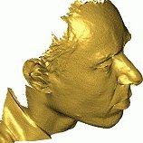
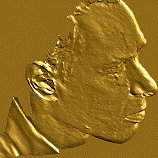
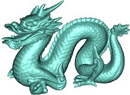
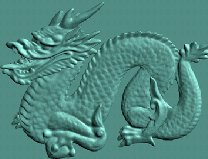

Bas-reliefs are a form of flattened artwork, part-way between 3D sculpture and 2D painting. We have developed an algorithm to automatically generate bas-reliefs from height fields (depth maps). The height field is regularly gridded and treated as an image, enabling a modified adaptive histogram equalization (AHE) algorithm to be applied. We modify the original image-contrast-enhancement AHE method to use gradient weights to enhance the shape features of the bas-relief. To effectively compress the height field, we limit the height-dependent scaling factors used to compute relative height variations in the output from height variations in the input; this prevents any height differences from having too great effect. Results of AHE over different neighbourhood sizes are averaged to preserve information at different scales in the resulting bas-relief. Compared to previous approaches, the proposed algorithm is simple and yet largely preserves original shape features. Experiments show that our results are, in general, comparable to and in some cases better than the best previously published methods.
   
Further work has developed a method to take frontal photographs of human faces as the input, and then automatically generate 3D bas-relief surfaces. The method generates a plausible image of a bas-relief of the photographed face using the mapping learnt by a neural network from examples of images with their corresponding bas-relief images. Since this mapping is learnt for specific lighting conditions the input image is first relit using two standard light sources using the quotient image technique. We then apply shape-from-shading to the two bas-reliefs generated from these two relit images to determine the 3D shape of the final bas-relief for each. The two results are averaged to produce a result which is less susceptible to effects of shadows. Our experimental results demonstrate that the generated bas-relief surfaces are smooth and plausible, with correct global geometric nature, the latter giving them a stable appearance under changes of viewing direction and illumination.
More details are given in:
return to Paul Rosin's homepage